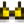

Coco dorado
| Coco dorado | |
| Es una nuez dura de pelar. | |
| Información | |
| Origen | Recolección • Comerciante isleño |
| Ubicación | Isla Jengibre |
| Estación | |
El coco dorado se encuentra en la Isla Jengibre y puede se puede obtener al sacudir una palmera o al cavar en los lugares de artefactos en la Isla Jengibre. También se puede conseguir en un estanque de peces con una población de 9-10 pez discos
También se puede comprar al Comerciante isleño por 10 cocos.
Los cocos dorados pueden ser abiertos por Clint en la Herrería por  25o, similar a las Geodas. Sin embargo, a diferencia de las Geodas, no se pueden abrir en la Prensa de geodas.
25o, similar a las Geodas. Sin embargo, a diferencia de las Geodas, no se pueden abrir en la Prensa de geodas.
Contenido
El primer coco dorado que se abra siempre dará una Nuez de oro.
Los cocos dorados también tienen una probabilidad de producir:
| Imagen | Nombre | Descripción | Precio de venta | Probabilidad |
|---|---|---|---|---|
| Brote de platanero | Tarda 28 días en crecer y madurar. Produce fruto todo el año si es plantado en Isla Jengibre. | 1/7* | ||
| Brote de mango | Tarda 28 días en producir un árbol de mango. Tiene fruta todo el año si es plantado en la Isla Jengibre. | 1/7* | ||
| Semillas de piña | Plántalos en un clima cálido. Tarda 14 días en madurar, y sigue produciendo fruta tras ello. | 1/7* | ||
| Fruto de taro | Plántalos en un clima cálido. Tarda 10 días en madurar. Crece más rápido si se plantan junto al agua. Se cosechan con la guadaña. | 1/7* | ||
| Semilla de caoba | Planta esto en tu granja para que crezca un árbol de caoba. | 1/7* | ||
| Cráneo fosilizado | ¡Es un espécimen perfecto! | 1/7* | ||
| Mena de iridio | Una mena exótica con muchas propiedades curiosas. Se puede fundir para hacer lingotes. | 1/7* | ||
 |
Casco dorado | Es la mitad de un coco dorado. | N/A | 1/20* |
*Después de obtener el casco dorado su probabilidad cambia a 0. Si el jugador aún no lo obtiene, la probabilidad de los primeros siete cocos dorados es en realidad 19/140 hasta que se obtenga.
Regalos
| Reacciones de Aldeanos
| |
|---|---|
| Odia | |
Sastrería
El coco dorado se puede usar como material en la maquina de costura para crear un Island Bikini. 
Tips
- El jugador puede evitar tener que recolectar al comprar 10 cocos en el Oasis los Lunes, después comerciar los cocos con el Comerciante isleño por 1 coco dorado.